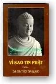

|
BuddhaSasana Home Page |
Vietnamese, with Unicode Times font |
|  |
Vì sao tin PhậtHòa thượng K. Sri DhammanandaThích
Tâm Quang dịch Việt, Nguyên tác: What Buddhists believe , Malaysia, 1987 |
-ooOoo- LỜI GIỚI THIỆU CỦA HÒA-THƯỢNG THÍCH HỘ GIÁC Đức Phật truyền dạy giáo pháp nhằm mang lại an lạc và giác ngộ. Nếu Phật Pháp chỉ là những tiền đề lý luận thỏa mãn tri thức thì Đạo Phật đã không có khả năng tồn tại qua bao nhiêu thế kỷ, trải rộng trên nhiều phần đất khác nhau. Dịch phẩm này có hai giá trị to lớn đối với người Phật Tử Việt Nam trong việc tu học: Thứ nhất Hòa-Thượng K. Sri Dhammananda đã khéo trình bày những đề tài của thời đại theo giáo lý căn bản truyền thống của Đức Phật. Đây là một việc làm đòi hỏi kinh nghiệm cao độ cả hai lãnh vực đạo và đời. Một người mới vào ngưỡng cửa Đạo Phật sẽ dễ dàng làm quen với những lời dạy đã được Đức Phật nói cách đây hai mươi lăm thế kỷ khắp lưu vực sông Hằng mà đến nay vẫn trực tiếp liên hệ đến mỗi cá nhân trong cuộc sống hàng ngày. Giá trị thứ hai phải nói đến là công trình dịch thuật. Dịch giả đã không làm tổn hại mảy may tinh thần trong sáng, bác lãm của nguyên tác. Trái lại bản dịch khiến chúng ta tăng thêm niềm thích thú để đọc trọn tác phẩm này. Thầy Thích Tâm Quang vốn không phải là một dịch giả xa lạ. Nhìn những công trình chuyển dịch ngày một quy mô của thầy khiến chúng ta nức lòng chờ đợi các dịch phẩm công phu khác tiếp nối sau này. Cảm nhận giá trị giáo khoa lớn lao của tác phẩm và với cả tấm lòng quý mến đối với tác giả lẫn dịch giả, chúng tôi trân trọng giới thiệu dịch phẩm này đến độc giả xa gần. Chùa Pháp Luân, Houston,
Hoa Kỳ, -ooOoo- LỜI NGƯỜI DỊCH "What Buddhists Believe" của Đại Lão Hòa Thượng Tiến Sĩ K. Sri Dhammananda được tái bản đến lần thứ năm và dịch ra nhiều thứ tiếng, đã trả lời xác đáng hầu hết những câu hỏi thực tiễn nhất của những ai muốn hiểu và học Phật. Đồng thời quyển sách này cũng đáp ứng kịp thời nhu cầu cấp bách cần phải có một phương cách giải thích Phật Pháp với quan niệm hiện đại để có thể làm sáng tỏ một cách khách quan và rốt ráo những ngộ nhận hay diễn dịch sai lầm về Đạo Phật từ bấy lâu nay. Nhằm vào người đọc có kiến thức mới làm quen với Phật Pháp, "What Buddhists Believe" bao quát tất cả khía cạnh cốt tủy của Phật Giáo được trình bầy theo một hệ thống chặt chẽ, khúc chiết và trên một quan điểm khoa học chính xác. Ngoài ra tác giả còn lồng vào rất nhiều đề tài tế nhị và hiện đại mà các nhà nghiên cứu hệ thống kinh sách thường ít khi đề cập đến. Nhận thấy đây là một tác phẩm hết sức hữu ích và cần thiết, người dịch không ngại tài hèn trí thiển, lại một lần nữa, mạo muội đem tất cả tấm lòng thành ra dịch soạn, chỉ với tâm nguyện mong đưa giáo pháp chân thật đến cho những người muốn học Phật mà chưa có duyên đọc được nguyên bản. Do số lượng trang của bản Anh và bản Việt nên sách được chia làm 3, mỗi kỳ khoảng chừng 400 trang. Chúng tôi xin chân thành cảm tạ chư Tôn Đức đã khích lệ và góp nhiều ý kiến bổ ích. Đặc biệt chúng tôi xin cảm tạ Như Lai Thiền Viện các Đạo Hữu Nguyên Cung Trần Đại Khâm - Nguyên Khiêm Lương Thị Thanh Kiệm, Trần Văn Khâm, Nguyễn Nam Hải, Thiện Bửu, Viên Minh Phạm Đình Khoát, Lê Van Phụng - Đặng Kim Sa, Quách Danh - Nguyễn Thị Túy Sương, Quách Thị Thùy Linh, Nguyễn Thành Tài - Nguyễn Thị Thúy Phượng, Nguyễn Bảo Châu, Nguyễn Bảo Quốc, Thanh Hoàng Huỳnh Thu Trang, Quảng Lâm Châu Ngọc Tòng, Quảng Hải Ngô Thanh Hùng, Nguyễn Triệu - Trần Hiệp, Crystal Nguyễn, Christopher Nguyễn, Diệu Tâm Dương Thị Thùy Linh, Kitty J. Creech, Nguyễn Thị Mai Hương, Diệu Chơn Luơng Thị Mai, Nguyễn Thị Mai Trang, Nguyễn Hữu Tuấn, Nguyễn Thị Mai Trinh, Nguyễn Mạnh Cương, Nguyễn Thị Thúy, Nguyễn Cung Thị Hỷ và Nguyễn Hữu Nhung, Nguyễn Thi Bạch Yến - Nguyễn Thiện Lục, và Đặng Văn Phan đã góp phần công đức trong việc ấn hành dịch phẩm này. Chúng tôi xin hồi hướng công đức hoằng pháp này lên Ngôi Tam Bảo và cầu nguyện Hồng Ân Tam Bảo thùy từ gia hộ Như Lai Thiền Viện thành công trong việc hoằng truyền Chánh Pháp và Quý Đạo Hữu cùng Bửu Quyến thân tâm thường an lạc và hạnh phúc. Cũng như các lần trước, do giới hạn của loại sách song ngữ nên chắc chắn có rất nhiều sơ sót, kính mong Chư Tôn Thiền Đức, các bậc thức giả cao minh, các bậc thiện trí thức, các bạn đạo ân nhân hoan hỉ bổ chính những sai lầm thiếu sót để cuốn sách được hoàn chỉnh hơn trong kỳ tái bản. Phật Đản 2541, Ngày
15-5-1997 -ooOoo- TIỂU SỬ ĐẠI-LÃO HÒA-THƯỢNG TIẾN SĨ K. SRI DHAMMANANDA MAHÀ NÀYAKA THERA Đại Lão Hòa-Thượng Tiến sĩ K. Sri Dhammananda, Trưởng Lão Tăng Già Mã Lai Á, phục vụ Phật Giáo Mã Lai trên 42 năm trong các chức vụ như một vị lãnh đạo tinh thần, một học giả, một cố vấn và một thiện hữu. Ngài sanh ngày 18 Tháng Ba Năm 1919 tại làng Kirinde , Tỉnh Matara phía nam Sri Lanka (Tích Lan). Ngài khởi đầu việc học hành theo nền giáo dục thế tục khi Ngài được 7 tuổi và tuy còn nhỏ Ngài đã phát triển mối quan tâm đặc biệt đến Phật giáo. Được sự giúp đỡ của một người cậu là Sư Trưởng tại ngôi chùa địa phương và người mẹ tận tâm của Ngài, Ngài thọ Sa Di giới vào năm 12 tuổi. Ngài được đặt pháp danh là "Dhammananda" có nghĩa là "Người chứng nghiệm hạnh phúc qua Phật Pháp" (Pháp Hỷ) . Sau mười năm tu học chuyên về giáo lý Đức Phật, năm 26 tuổi Ngài tốt nghiệp văn bằng Ngôn Ngữ Học, Triết Lý, và Quy Tắc Pali Viện Đại Học Vidyalankara Pirivena.Ngài tốt nghiệp Cao Học Triết Lý Ấn Độ năm 1949 tại Viện Đại Học Beneres (Ba-Lã-Nại).Sau khi phục vụ 3 năm tại Sri Lanka, Ngài được tuyển chọn đi hoằng Pháp tại Mã Lai. Vào các thập niên 50 và 60, Phật Giáo bị giới trí thức Trung Hoa tại Mã Lai coi rẻ và nghĩ rằng Đạo Phật chỉ là mê tín dị đoan. Qua Hội Truyền Bá Giáo Lý Phật Đà, Ngài đã phát hành các tài liệu, các loại sách về mọi phương diện của Phật Giáo và kết quả một số đông đã nhận thức được giáo lý chân chính của Đức Phật. Ngài đã phát hành các cuốn sách rất phổ thông như "Người Phật Tử Tin Gì", "Làm Thế Nào Để Sống Khỏi Sợ Hãi và Lo Lắng", "Hạnh Phúc Lứa Đôi", "Nhân Loại Tiến Về Đâu" và "Thiền Định - Con Đường Duy nhất". Tuy không phải là một nhà truyền giáo hùng biện, nhưng Ngài đã thành công cảm hóa tư tưởng của cả giới thanh niên lẫn trí thức với một lối trình bầy Giáo Pháp của Đức Phật một cách r‚ ràng, đơn giản và khoa học. Ngài nhận được các Văn Bằng Tiến Sĩ Danh Dự của nhiều Đại Học trên thế giới và cũng được ân thưởng Tước Vị Johan Setia Mahkota bởi Hoàng Đế Mã Lai. Ngài cũng có, như Đức Phật mô tả, bảy Đức hạnh cao quý của một Đại nhân trong Kinh Sakha Sutta (A.N. 4:31):
BENNY LIOW WOON KHIN -ooOoo- LỜI TÁC GIẢ Với số sách Phật quá nhiều hiện nay, câu hỏi đặt ra là có cần thêm một cuốn nữa hay không. Mặc dù có rất nhiều sách Phật Giáo, nhưng đa số đều được viết nhằm cho những người đã có căn bản Phật Pháp. Một số được viết theo văn chương lối cổ, dịch nghĩa theo nguyên bản. Loại viết như vậy không lôi cuốn được các độc giả hiện đại, vì khiến họ có cảm nghĩ Phật Giáo là một vấn đề khô khan. Cũng có những sách do những học giả sưu tầm, trình bày giáo lý ở cấp đại học, bút pháp thâm thúy. Ngoại trừ một số độc giả có kiến thức có thể hiểu được, những sách này tạo nhiều khó khăn cho đại chúng vì họ cho rằng Phật Giáo quá phức tạp không thực tế. Có một số sách nêu những dị biệt giữa những trường phái trong Phật Giáo, kết quả làm cho một số độc giả không được hướng dẫn càng thấy hoài nghi nhiều về cái gọi là sự "tranh chấp giữa các hệ phái" mà không nhận thức được rằng thực ra có nhiều tương đồng hơn là dị biệt giữa những hệ phái này. Cũng có những sách do những người không phải là tín đồ Phật Giáo viết, trong đó vì hữu ý hay thiếu kiến thức, đã bóp méo và xuyên tạc giáo lý chân chính của Đức Phật. Cuốn sách này được viết ra với mục đích chính là giới thiệu giáo lý Phật Pháp nguyên thủy một cách rõ ràng, không diễn tả quá mức, không một ẩn ý, hay coi rẻ các trường phái Phật Giáo, để độc giả có thể hiểu Phật Pháp theo quan niệm hiện đại. Thế giới ngày nay chú ý rất nhiều đến Phật Giáo vì đại đa số quần chúng càng ngày càng hiểu biết, chán ngán những giáo điều và dị đoan, và mặt khác, những tật xấu của con người như tham lam và ích kỷ càng ngày càng tăng trưởng vì chủ nghĩa vật chất. Phật Giáo dạy nhân loại đi vào con đường Trung Đạo, con đường của sự điều độ, của sự hiểu biết đứng đắn hơn và làm thế nào để có một cuộc sống dồi dào bình an và hạnh phúc . K. Sri Dhammananda, -ooOoo- Ðầu trang | Mục lục | 01 | 02 | 03 | 04 | 05a | 05b | 06 | 07 | 08 | 09 | 10 | 11 | 12 | 13 | 14 | 15 | 16 | 17 |
Chân thành cám ơn Tỳ-kheo
Thích Tâm Quang đã gửi tặng phiên bản điện tử
(Bình Anson, tháng 11-2001)
Xem bản Anh ngữ: What Buddhists believe
[Trở
về trang Thư Mục]
updated: 03-11-2001